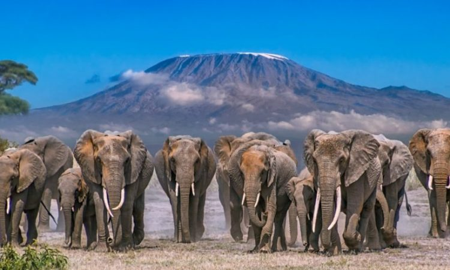

Elephant
Elephants are majestic and intelligent animals, known for their massive size and distinctive trunks. There are three
species: the African savanna elephant, the African forest elephant, and the Asian elephant. They are social creatures,
often forming close-knit herds led by a matriarch, and they have complex communication methods, including vocalizations
and even low-frequency sounds that can travel long distances.
Elephants are herbivores, consuming vast amounts of vegetation daily, and their impressive memory contributes to their
survival, particularly in finding water sources during droughts.
Deer
Deer are herbivorous mammals belonging to the Cervidae family, found in diverse habitats across the globe, except
Antarctica. Known for their antlers, which males regrow annually, they come in various species such as white-tailed
deer, red deer, and reindeer. They are agile and have excellent senses of smell, hearing, and vision, which help them
detect predators. Social by nature, many deer species form herds, especially during mating or migration seasons. Deer
play a vital ecological role by influencing plant growth and aiding seed dispersal through grazing.
Giraffe
Giraffes are the tallest land animals, known for their long necks, spotted coats, and gentle demeanor. Native to Africa,
they feed on leaves from tall trees like acacias. Their necks and long legs help them reach high vegetation, while their
unique coat patterns provide camouflage. Giraffes live in loose social groups and communicate through vocalizations and
body language. They play an important role in their ecosystem by aiding in seed dispersal.